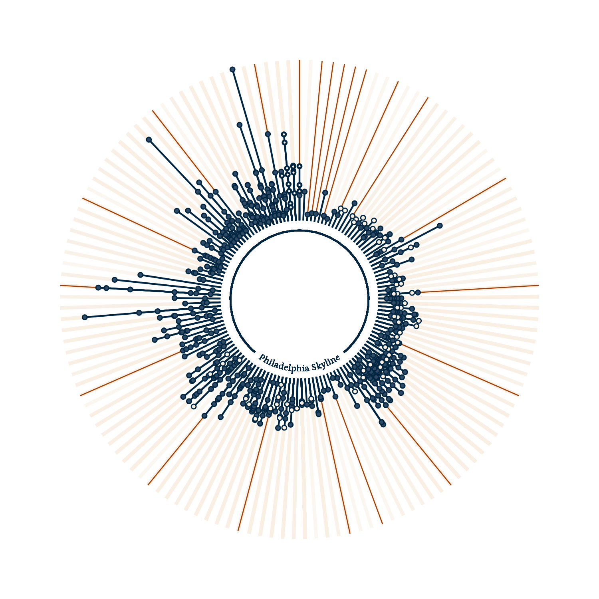

Silvia Canelón, PhD
Data Analyst at the Penn Urban Health Lab
I am a researcher, community organizer, and R educator. My research leverages electronic health record data to study pregnancy-related outcomes, and my organizing values data literacy as a way to build power and effect change.
Learn more about me →
